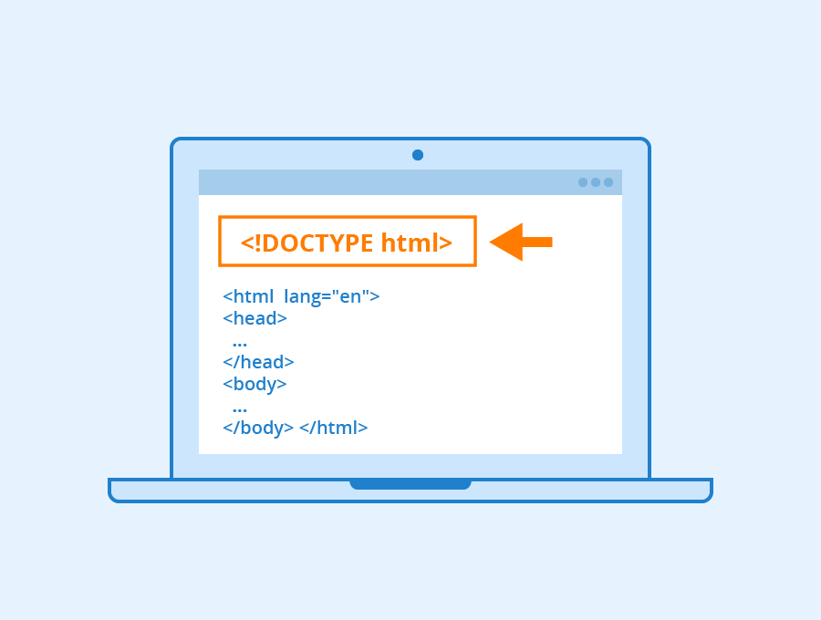

El propósito del sitio es implementar un recurso digital
para dinamizar una estrategia de aprendizaje basada en
los temas de etiquetas básicas de HTML, atributos y valores
Etiquetas Básicas de HTML
Las etiquetas básicas de HTML son una serie de códigos que
van dando un formato y estructura al contenido de las páginas web.
Estas etiquetas serán interpretadas por un navegador de internet
que mostrará adecuadamente la página web al usuario.
El formato de cada etiqueta HTML es un bloque de texto encerrado entre corchetes angulares y cada elemento
HTML tiene una etiqueta de inicio y se termina con una etiqueta de cierre que lleva una barra inclinada al principio. Mediante las etiquetas HTML se puede subrayar textos, poner en negrita, estrablece encabezados, estructurar guiones, párrafos,
añadir imágenes y realizar vínculos con otras páginas Web
Las etiquetas más usadas en HTML son:
body para el contenido
head para información
div división dentro del contenido
a para enlaces
strong y b para poner el texto en negrita
br para saltos de línea
h1 hasta h6 para títulos dentro del contenido
img para añadir imágenes al documento
ol para listas ordenadas
ul para listas desordenadas
lipara elementos dentro de la lista
p para parágrafos
span para estilos de una parte del texto
i y em para texto en cursiva
u para texto subrayado
Celaya Luna, A. (2014). Creación de páginas web: HTML 5 (pág. 3)

Atributos y Valores
Los atributos se consideran como información adicional que van siempre
dentro de la etiqueta de apertura, para añadir información o significado
al elemento HTML al que se esta diseñando y cuando se usa un atributo se
debe especificar su valor, este valor representa una cantidad exacta, característica
o la forma en que se ejecutará el atributo.
Un atributo se escribe de siguiente manera: atributo = "valor", el nmombre del atributo seguido del signo igual y entre
comillas el valor, todo esto siempre dentro de la etiqueta de apertura.
Los atributos más usados en HTML son:
Id = " " para indicar un elemento único
class = " " identificador múltiple
align = " " alineación de contenido
borde = " " para darle borde al contenido
style = " " para darle un estilo al contenido
background-color = " " para color de fondo
href = " " para enlace HTML
height = " " para determinar altura
width = " " para determinar ancho
src = " " para imágenes
Al usar un atributo en HTML se debe especificar su valor, este puede representar una cantidad exacta o una cantidad
especifica o simplemente ejecuta un atributo.
Algunos atributos HTML y valores utilizados son:
Id su valor puede ser cualquier palabra que sirve para identificar un elemento
align es alioneación y sus valores pueden sr: center, right, left y justify
borde-style estilo de borde, los valores disponibles son: solid, dotted, dashed, double, etc
bg color para color de fondo de ciertos elementos como body, su valor puede ser cualquier color en formato palabra como: red, green, #ff0000, etc
href para enlaces como el valor de la dir3cción de una carpeta o URL
height define la altura y su valor puede ser una medida de unidad como: 10px, 12em y 100%
width define el ancho y su valor ser cualquier medida con su respectiva unidad
Desarrolladoresw únicoeb.org. (2019, July 8). ▷Atributos en HTML - qué son, para qué sirven y cuáles son | Desarrolladores web. Desarrolladores Web. https://desarrolladoresweb.org/html/atributos-html/